Darba uzsākšana
Lomu centrs
Lai sāktu lietot Latvian Intrastat Reporting Localization, nav nepieciešami specifiski lomu centri, jo funkcionalitāte ir pieejama izmantojot pogu Meklēt lapu vai atskaiti...
Konfigurācijas pakotnes importēšana
Attiecinot konfigurācijas pakotni, galvenie pamatuzstādījumi tiek sagatavoti, lai jūs varētu uzsākt lietot Latvian Intrastat Reporting Localization nekavējoties.
Klikšķiniet uz pogas Meklēt lapu vai atskaiti... 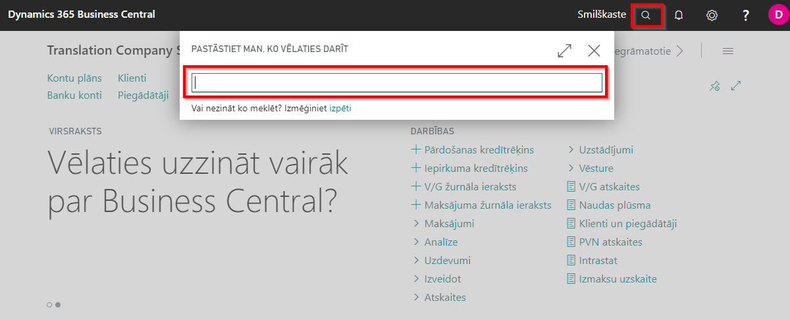
Rakstiet Iestatīšana ar palīdzību un izvēlieties to no saraksta Administrēšana 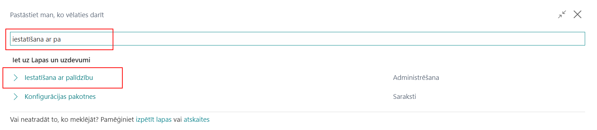
Uzklikšķiniet uz procesa Uzņēmuma iestatīšana ar Latvijas lokalizāciju

Spiediet uz pogas Nākamā līdz parādīsies LV Intrastat procesa vednis. Spiediet pogu Importēt un ielādējiet konfigurācijas pakotni. Tad spiediet pogu Attiecināt, lai tiktu ielādēta konfigurācijas pakotne ar visiem nepieciešamajiem Intrastat uzstādījumiem 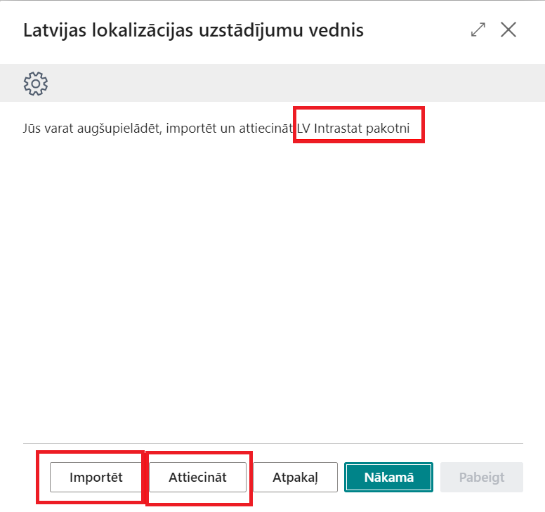
Konfigurācijas pakotne nodrošina sekojošus uzstādījumus:
- Valstis/Reģionus
- Kravas nosūtīšanas veidus
- Valsts/ reģiona tulkojumus
- Transakciju tipus
- Transportēšanas metodes
- Numuru sērijas
- Datu apmaiņas definīcijas un to uzstādījumus
- Intrastat atskaišu uzstādījumus
SVARĪGI!! Ja visi nepieciešamie Intrastat iestatījumi jau ir veikti iepriekš, tad nav nepieciešams ielādēt konfigurācijas pakotni, bet Datu apm. definīcijas lapā ir nepieciešams ielādēt failu ar Intrastat datu apmaiņas definīcijām. 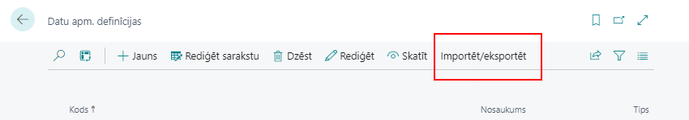
Uzstādījumi
Pēc konfigurācijas pakotnes vai datu apmaiņas definīciju pakotnes attiecināšanas, ir jāveic uzstādījumi sekojošos logos:
- Intrastat atskaišu uzstādījumi
- Iestatiet Datu apmaiņu definīcijas kodus, kas atbilst jūsu uzņēmuma iesniedzamajām Intrastat atskaitēm
- Izvēlaties Pārskata iesniedzēja darbinieka Nr., kas ir atbildīgs par Intrastat pārskatu iesniegšanu
- Darbinieki kartiņa. Norādiet darbinieka kartiņā sekojošu informāciju tiem darbiniekiem, kas ir atbildīgi par Intrastat atskaišu iesniegšanu:
- Vārds, Uzvārds
- Uzņēmuma Tālruņa Nr.
- Uzņēmuma E-pasts
- Uzņēmuma informācija iestatījumos ir jābūt norādītai sekojošai informācijai:
- Nosaukums
- Adrese
- Pasta indekss
- Valsts/ reģiona kods
- Reģistrācijas Nr.
- PVN Reģistrācijas Nr.
- Preces kartiņa. Pārliecinieties, ka visām precēm, kas ir jāiekļauj Intrastat atskaitēs, preču kartiņās ir aizpildīta sekojoša informācija:
- Bāzes mērvienība
- Papildus mērvienība (ja piemērojams)
- Neto svars - norādiet preces neto svaru tā bāzes mērvienībā
- Bruto svars - norādiet preces bruto svaru tā bāzes mērvienībā
- Tarifa Nr. - norādiet preces tarifa numuru
- Izcelsmes valsts/ reģiona kods - norādiet preces izcelsmes valsts kodu 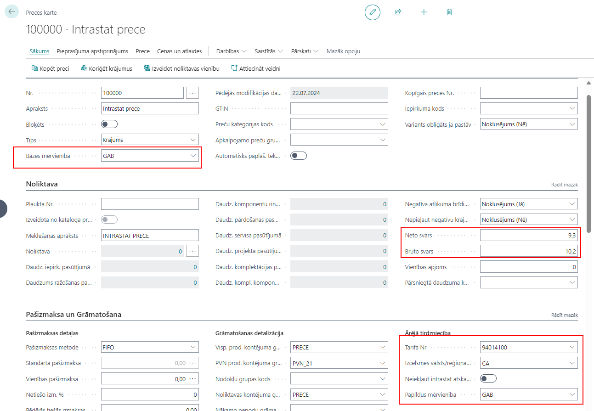
PIEZĪME! Lūdzu, ņemiet vērā, ka preces kartiņas obligātiem laukiem jau būtu jābūt aizpildītiem, lai nodrošinātu veiksmīgu preces saņemšanu un nosūtīšanu.
- Klienta/ Piegādātāja kartiņa:
- Valts/ Reģiona kods 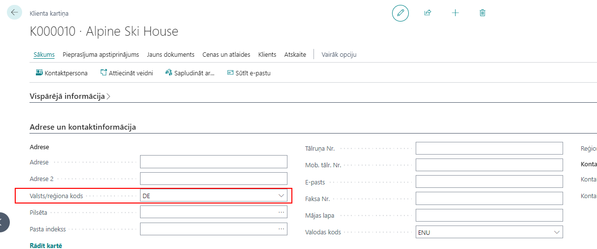 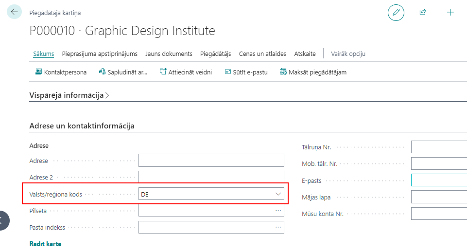
PIEZĪME! Lūdzu, ņemiet vērā, ka klienta/ piegādātāja kartiņas obligātiem laukiem jau būtu jābūt aizpildītiem, lai nodrošinātu veiksmīgu preces saņemšanu un nosūtīšanu. Pēc izvēles var aizpildīt arī sekojošus laukus Kienta/ Piegādātāja kartiņā:
- Kravas nosūtīšanas metodes Kods
- Noklusētais transportēšanas tips
- Noklusētais transportēšanas tips - atgriešana
- Noklusētā transportēšanas metode
Kā lietot?
Kā lietot: reģistrējiet no Eiropas Savienības saņemtus sūtījumus no Iepirkuma pasūtījumiem/ Pārdošanas atgriešanas pasūtījumiem/ Pārvietošanas pasūtījumiem
Mērķis: Lai iegūtu korektus datus Intrastat pārskatam, ir svarīgi ievadīt pirms iegrāmatošanas visu nepieciešamo informāciju sagatavojot ES pārdošanas/ iepirkšanas un atgriešanas/ pārvietošanas dokumentos
Pieejams no: iepirkšanas pasūtījumiem/ pārdošanas atgriešanas pasūtījumiem/ pārvietošanas pasūtījumiem, kas ir sasniedzami no pogas Meklēt Lapu vai Atskaiti…
Priekšnosacījumi: Pirms preces saņemšanas iegrāmatošanas nepieciešams ievadīt preces kartiņā sekojošu informāciju:
- Neto svars
- Bruto svars
- Tarifa Nr.
- Izcelsmes valsts/reģiona kods
Pirms preces saņemšanas iegrāmatošanas nepieciešams ievadīt iesaistītā klienta/piegādātāja kartiņā sekojošu informāciju:
- Valtsts/ Reģiona kods
- PVN reģistrācijas Nr.
Pirms preces saņemšanas iegrāmatošanas nepieciešams ievadīt iepirkšanas pasūtījumu/ pārdošanas atgriešanas pasūtījumu/ pārvietošanas pasūtījumu dokumentācijā sekojošu informāciju:
- Kravas nosūtīšanas metode
- Transakcijas tips
- Transportēšanas metode
Kā lietot: reģistrējiet uz Eiropas Savienību veiktus sūtījumus no Iepirkuma atgriešanas pasūtījumiem/ Pārdošanas pasūtījumiem/ Pārvietošanas pasūtījumiem
Mērķis: Lai iegūtu korektus datus Intrastat pārskatam, ir svarīgi ievadīt pirms ES piegādes grāmatošanas visu nepieciešamo informāciju sagatavojot ES pārdošanas/ iepirkšanas un atgriešanas/ pārvietošanas dokumentos.
Pieejams no: iepirkšanas atgriešanas pasūtījumiem/ pārdošanas pasūtījumiem/ pārvietošanas pasūtījumiem, kas ir sasniedzami no pogas Meklēt Lapu vai Atskaiti…
Priekšnosacījumi: Pirms preces nosūtīšanas grāmatojuma nepieciešams ievadīt preces kartiņā sekojošu informāciju:
- Neto svars
- Bruto svars
- Tarifa Nr.
- Izcelsmes valsts/reģiona kods
TPirms preces saņemšanas iegrāmatošanas nepieciešams ievadīt iesaistītā klienta/piegādātāja kartiņā sekojošu informāciju:
- Valtsts/ Reģiona kods
- PVN reģistrācijas Nr.
Pirms preces saņemšanas iegrāmatošanas nepieciešams ievadīt iepirkšanas pasūtījumu/ pārdošanas atgriešanas pasūtījumu/ pārvietošanas pasūtījumu dokumentācijā sekojošu informāciju:
- Kravas nosūtīšanas metode
- Transakcijas tips
- Transportēšanas metode
Kā lietot: Sagatavot Intrastat atskaiti, izdrukāt pārskatu un ģenerēt failu iesniegšanai Centrālās Statistikas birojam
Klikšķiniet uz pogas Meklēt Lapu vai Atskaiti...
Ierakstiet meklētājā un izvēlaties no saraksta Intrastat atskaišu saraksts 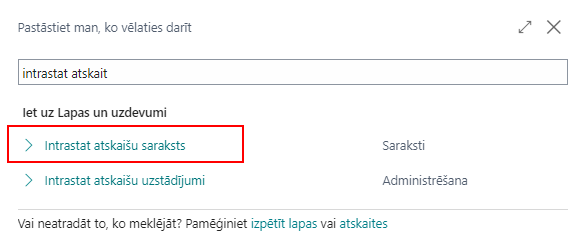
Izveidojiet jaunu Intrastat atskaites kartiņu 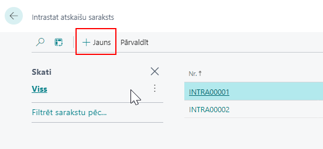
Aizpildiet sekojošus laukus Intrastat atskaites kartiņā:
- Nosaukums - ierakstiet īsu žurnāla aprakstu. Piemēram, Augusts 2024
- Statistikas periods - ierakstiet statistikas pārskata periodu formātā GGMM. Piemēram "2408". 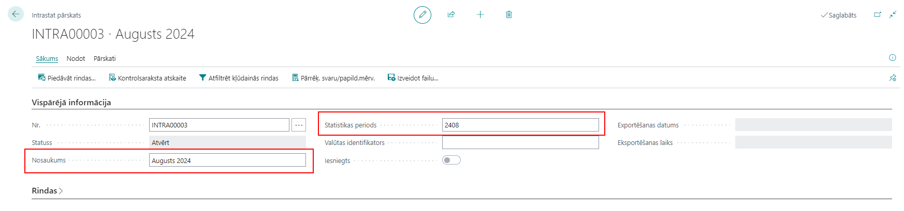
Klikšķiniet uz pogas Piedāvāt rindas... 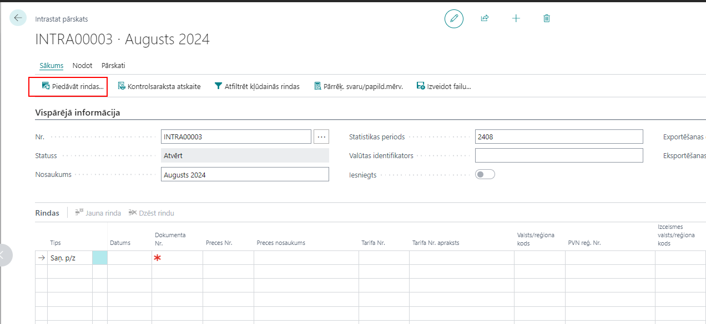
Opciju logā pārliecinieties, vai pārskata periods ir korekts un visi nepieciešamie filtri ir iestatīti, un nospiediet pogu Labi. 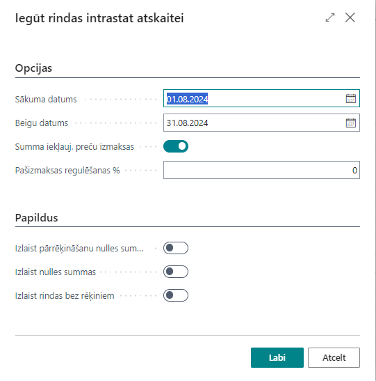
Pārbaudiet sagatavotās darījumu rindiņas.
Piezīme! Intrastat žurnāls nevar tikt sagatavots, ja preces kartiņā nav ievadīts Tarifa numurs un ir bijuši sagatavotā statistikas pārskata periodā ES izvedumi vai ES ievedumi, kas saistīti ar konkrēto preci. Ja kāda informācija Intrastat žurnāla rindiņās trūkst, to var manuāli aizpildīt.
Izdrukājiet Intrstat pārskatu klikšķinot uz pogas Intrastat pārskats (1A,2A,1B,2B) 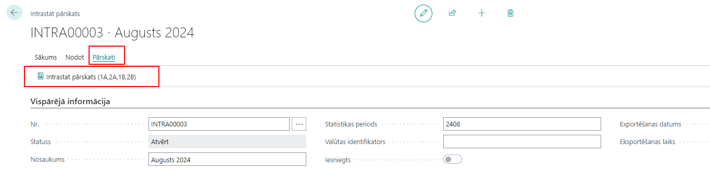 *Pārskata veids - izvelaties no saraksta atskaiti, ko vēlaties izdrukāt: * Ievedums 1A; *Ievedums 1B; * Izvedums 2A; *Izvedums 2B.
- Pārskata iesniedzējs - izvēlaties no darbinieka saraksta darbinieku, kas atbildīgs par atskaites iesniegšanu
Klikšķiniet uz pogas Izveidot failu..., lai sagatavotu atskaites failu, ko ielādēt Centrālās statistikas Biroja mājaslapā 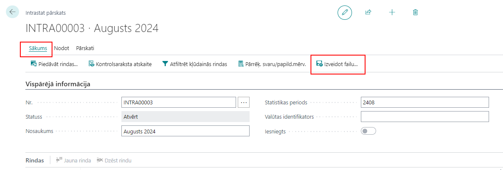 Un izvēlaties atskaites veidu, kam failu vēlaties sagatavot: 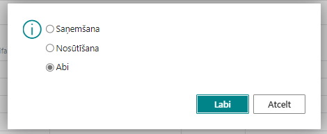
Ielādējiet sagatavoto atskaites failu Centrālās statistikas Biroja mājaslapā.